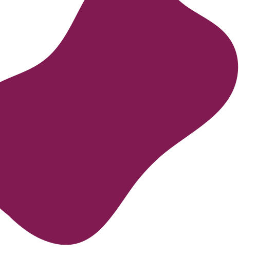
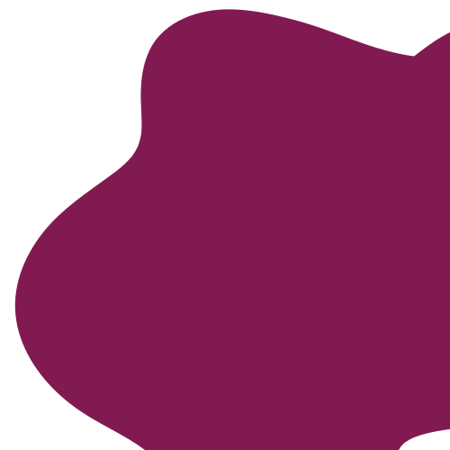
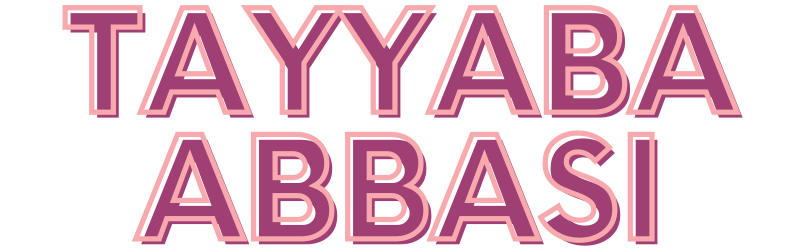
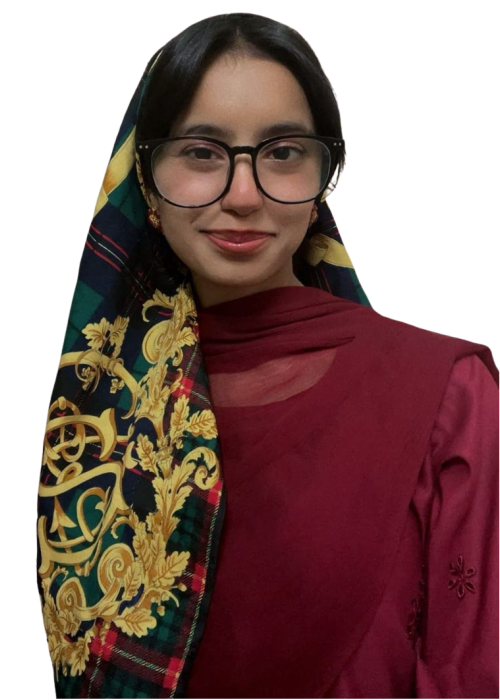

I'm a junior year Computer Science student at NUST, currently building things across the full stack, from backend APIs to messy, colorful frontends.
I love color. Loud color, weird color combos, and squishy, wiggly, organic shapes over stiff straight lines. If a design feels a little chaotic and alive, that's usually me.
LAMP-stack marketplace with role-based access, a finite-state-machine order flow, courier API integration, and transactional email. Scaled to 1,800+ artists and 2,300+ artworks.
Production e-commerce platform delivered as sole engineer, with PostgreSQL/Supabase schema design and REST APIs for product and order management.
Production e-commerce platform delivered as sole engineer, with pgvector-based semantic search for AI-driven product matching.
C++ contagion-spread simulator over a real-world 1,000-node email network, with configurable transmission and contact-rate parameters feeding a frontend visualization.
Quantum Finite Automata simulator built from first principles, state transitions, input validation, and visual output rendering. Awarded full marks.
Fully playable Tetris built in x86 assembly (MASM) for a Computer Organization & Assembly Language course. Awarded full marks.
Local chatbot built with Ollama for on-device LLM inference, exploring self-hosted models as an alternative to cloud AI APIs.
Cross-platform Flutter/Firebase community app for NUST students, carpooling, marketplace, jobs, events, real-time chat, and role-based dashboards.
NUST Math Nexus, Sep 2025 to Aug 2026. Owned social media, media coverage, and graphic design for events like Integration BEE and Mathlympics. Awarded the Lapel Pin Award by the Rector of NUST.
SEECS NUST Welcome '25. Led the media team, directing graphics, publications, and social media strategy across a team of directors and executives.
NUST SEECS Batch 2024, Sep 2024 to Jun 2026. Represented the class to faculty and administration.
SEECS Sports Gala 2025. Captained the batch across all sports teams, with individual team captains reporting directly.